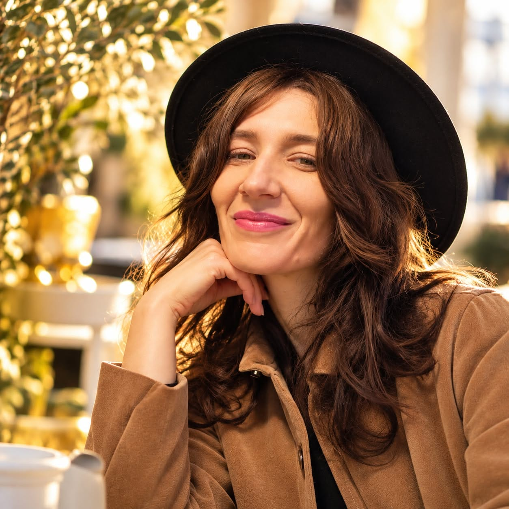

Explorezi prezentul
Explorarea efectelor prezente și a percepțiilor polarizate. Ce se repetă? Unde te simți blocată? Ce sens ai dat experiențelor tale?
UN TIMP PENTRU TINE. O PERSPECTIVĂ NOUĂ.
Poate că ceea ce cunoști acum despre tine nu este tot ceea ce poți fi.
Întoarcerea la tine LIVE săptămânal cu Iulia Bobeica
În fiecare luni, 19:00–20:00 Online, pe Jitsi · Participare gratuită
Poți participa la LIVE și doar ca să asculți.

Mai aproape de tine.
Cu loc pentru ce devine posibil.
METODA CLAR · NUME ÎN LUCRU
„Creația conștientă nu începe după transformare. Ea este prezentă încă de la începutul procesului.”
Nu așteptăm să dispară toate blocajele pentru a începe să creăm conștient. Pornim de la ceea ce trăiești acum și explorăm, fără concluzii prestabilite, percepțiile care îți influențează reacțiile și alegerile. Creația conștientă însoțește întregul proces, nu reprezintă doar ultimul pas.
Explorarea efectelor prezente și a percepțiilor polarizate. Ce se repetă? Unde te simți blocată? Ce sens ai dat experiențelor tale?
Identificarea rădăcinilor și echilibrarea percepțiilor prin întrebări și legile universale. Nu înlocuim forțat „negativul” cu „pozitivul”, ci căutăm o perspectivă mai cuprinzătoare.
Verificarea schimbărilor, clarificarea valorilor și alegerea unor acțiuni conștiente. Revenim la situația inițială și observăm ce este diferit.
Uneori, dintr-o experiență reținem aproape exclusiv o singură latură: „Mama nu m-a iubit”, „Nu sunt suficient de bună” sau „Dacă spun nu, îi dezamăgesc pe ceilalți”. În lucru, distingem între faptele observabile și semnificația atribuită lor. De pildă, în loc să presupunem că „mama nu m-a iubit” este un fapt demonstrat, întrebăm ce s-a întâmplat concret și cum a ajuns persoana la această concluzie.
Explorăm apoi și perspectivele pe care nu le-a luat în calcul, prin întrebări și legile universale, fără să negăm experiența ei. O constelație sistemică poate uneori să facă vizibile relații, poziționări sau interpretări care merită explorate mai departe, dar nu este o etapă obligatorie a Metodei CLAR și nu stabilește automat adevărul despre trecut.
Aceste componente se întrepătrund. Nu sunt trei etape rigide, iar fiecare parcurs este adaptat situației concrete. Vezi cum folosesc cele șapte legi universale →
DINCOLO DE „NU POT”
Îți dorești să începi un proiect. Sau să faci o schimbare importantă pentru tine. Și totuși, observi că amâni. Din nou.
Înainte să tragi concluzia că îți lipsește voința, putem să ne oprim puțin și să privim mai îndeaproape.
Ce se întâmplă concret atunci când amâni?
Ce crezi despre tine în acea situație?
Ce altă perspectivă ai putea explora?
Nu pornim de la un răspuns pregătit despre viața ta. Pornim de la ceea ce trăiești și de la ceea ce este important pentru tine.
Un exemplu de explorare, nu povestea unei cliente.
O ÎNTÂLNIRE, ÎN FIECARE LUNI
În LIVE vorbim despre experiențe în care poate te regăsești și despre felul în care le privești. Prin explicații, discuții și întrebări, poți cunoaște mai bine modul meu de lucru.
Pot exista și demonstrații voluntare. Poți participa doar ascultând, fără să vorbești despre viața ta personală.
Vezi detaliile participăriiCE PUTEM EXPLORA
OMUL DIN SPATELE ÎNTÂLNIRILOR
Iulia Bobeica
Consilier pentru dezvoltare personală
Absolventă de Economie și Administrarea Afacerilor, specializarea Marketing
Sunt Iulia Bobeica, consilier pentru dezvoltare personală și absolventă de Economie și Administrarea Afacerilor, specializarea Marketing.
Întotdeauna m-a interesat să înțeleg lucrurile în profunzime, să privesc o situație din mai multe perspective și să nu mă opresc la prima explicație.
Această curiozitate se regăsește în felul în care lucrez astăzi cu oamenii.
Din dorința de a explora complexitatea percepțiilor, tiparelor și alegerilor personale a început să se contureze «Întoarcerea la tine», modul meu de lucru.
Pentru mine, nu este suficient să înțelegem de ce o persoană a reacționat într-un anumit fel.
Mă interesează și ceea ce devine posibil pentru ea atunci când începe să privească lucrurile diferit.
Îmi place să lucrez în profunzime, fără să pierdem din vedere viața reală.
O INVITAȚIE PENTRU TINE
Poate că sunt lucruri pe care ți le dorești de mult, dar care încă nu și-au găsit locul în viața ta.
Poate ai încercat să schimbi ceva, însă ai observat că anumite situații se repetă.
Dar dacă ai putea să le privești și dintr-o perspectivă la care nu te-ai gândit până acum?
În întâlnirile noastre de luni explorăm tocmai aceste lucruri: felul în care privim experiențele, ceea ce ne poate ține pe loc și posibilitățile de a face alegeri diferite.
Dacă vrei să participi, poți solicita detaliile întâlnirii printr-un mesaj privat.
Poți solicita detalii prin WhatsApp sau Messenger.
LUCRUL INDIVIDUAL
În întâlnirile individuale, pornim de la situația ta și de la ceea ce dorești să explorezi. Lucrăm cu percepțiile, tiparele și valorile tale și revenim la schimbările observate în comportamente și alegeri.
Dacă vrei să afli ce presupune lucrul împreună, poți solicita detalii înainte să decizi.
Vreau să aflu mai multeSe deschide WhatsApp cu un mesaj pregătit. Îl poți modifica înainte de trimitere.
INSTRUMENTELE METODEI CLAR
În abordarea mea, cele șapte legi sunt repere de explorare și întrebări practice. Nu le parcurgem mecanic și nu trebuie folosite toate într-o ședință. Alegem ceea ce este relevant pentru situația ta, astfel încât să poți observa și alte perspective asupra experiențelor tale.
Explorăm opusul unei percepții puternice: dacă ai văzut doar pierderea, ce altceva a existat în aceeași experiență? Căutăm răspunsuri concrete, nu optimism forțat.
Lucrăm cu trăsăturile pe care le admiri sau le judeci la ceilalți. Le traducem în comportamente observabile și explorăm unde le poți recunoaște și la tine.
Când ai trăit o provocare, explorăm ce formă de sprijin a coexistat cu ea, pe aceeași temă și în același moment, fără să negăm durerea trăită.
În situațiile percepute ca pierderi, explorăm ce s-a schimbat, ce a rămas și ce poate căpăta o altă formă în raport cu valorile tale.
Observăm dacă un mod de a reacționa sau un tipar apare în mai multe domenii ale vieții: relații, muncă, bani sau alegeri.
Clarificăm prioritățile și valorile după care îți organizezi timpul, energia și deciziile. Explorăm ce este cu adevărat important pentru tine.
Explorăm obiectivele foarte încărcate emoțional și tensiunea creată de dorința de a obține sau evita ceva. După echilibrare, verificăm dacă dorința este aceeași.
Ce s-a întâmplat ultima dată când ai spus nu? Ce ai presupus că au gândit ceilalți? Ce efecte are asupra ta faptul că spui mereu da? Explorăm atât costurile, cât și beneficiile concrete ale unei limite, în raport cu valorile tale.
Separăm evenimentul de concluzia despre identitatea ta. Ce anume nu a funcționat? Ce ai învățat, ce resurse ai folosit și ce alte rezultate au existat? Nu negăm pierderea și nici nu impunem o interpretare pozitivă.
În ce situație precisă ai simțit asta? Cine era prezent, ce a făcut fiecare și ce ai fi avut nevoie să se întâmple? Observăm dacă aceeași concluzie apare și în alte relații, fără să presupunem că toate au aceeași cauză.
Revenim la momentul și la concluzia de la care am pornit: cum le percepi acum, ce simți când vorbești despre ele și cum reacționezi în situația actuală? Dacă o percepție s-a echilibrat, nu revenim automat asupra ei. Dacă un blocaj continuă, explorăm împreună dacă există o altă percepție sau un alt moment-rădăcină relevant. Nu presupunem că un singur eveniment explică întreaga viață a unei persoane.
Spui: „Mă simt mereu mai puțin importantă decât ceilalți”. În loc să îți cer să repeți o afirmație pozitivă, explorăm o situație concretă în care ai simțit asta, ce ai concluzionat atunci și cum se reflectă concluzia în prezent. Prin întrebări inspirate de dualitate și reflexie, căutăm și ceea ce nu observaseși. Apoi revenim la situația inițială și verificăm dacă percepția și reacția ta s-au schimbat.
Aceste legi sunt prezentate ca principii ale cadrului de dezvoltare personală folosit în metodă, nu ca legi științifice demonstrate. Exercițiile sunt adaptate fiecărei persoane.
LUCRĂM ÎMPREUNĂ
Programul individual „Întoarcerea la tine” durează patru luni. Nu îți promit că în acest interval dispar toate tiparele. Îți propun un spațiu în care să lucrăm în profunzime cu situațiile și obiectivele prioritare, în ritmul și în limita timpului disponibil.
De la un efect prezent: o relație care te apasă, o alegere amânată, dificultatea de a pune limite sau sentimentul că stai pe loc.
Explorăm situațiile concrete și concluziile formate, folosim întrebări pentru echilibrarea percepțiilor și revenim la situațiile-rădăcină pentru verificare. Constelațiile sistemice sunt oferite separat și pot fi alese, dacă sunt potrivite pentru tema ta; nu reprezintă o etapă obligatorie a programului.
Clarifici ce contează pentru tine, observi schimbările și alegi acțiuni conștiente. La final, poți continua cu alte obiective, dacă îți dorești.
Stabilim împreună obiectivele prioritare și lucrăm în ritmul potrivit situației tale. Pentru disponibilitate și detalii despre colaborare, îmi poți scrie direct, fără obligația de a începe programul.
CONSTELAȚII SISTEMICE · ACTIVITATE SEPARATĂ
Constelațiile sunt întâlniri experiențiale în care explorăm o temă personală sau o relație prin poziționarea unor reprezentanți. În formarea mea la Academia ReGeneration, abordarea este fenomenologică: nu pornesc de la ideea că știu dinainte cauza sau soluția. Constelațiile sunt o activitate distinctă de lucrul individual prin Metoda CLAR.
Te întreb ce dorești să explorezi în acea întâlnire. Clarificăm tema și câteva fapte relevante despre relații sau familia ta, fără să încercăm să analizăm întreaga poveste și fără să lucrăm simultan pe mai multe intenții.
Într-un grup, persoana care își lucrează tema poate alege, cu acordul lor, participanți care să reprezinte membri ai familiei, propria persoană ori alte elemente importante pentru situație. Începem, de regulă, cu puțini reprezentanți.
Reprezentanții sunt așezați în raport unii cu ceilalți. Observăm pozițiile, distanțele, reacțiile și felul în care participanții descriu ceea ce trăiesc în exercițiu. Aceste observații sunt material de explorare, nu dovezi despre evenimente ascunse.
Pot apărea întrebări, mișcări, schimbări de poziție sau fraze scurte. Nu forțăm o reacție ori o împăcare. Fiecare constelație este diferită, iar persoana care își lucrează tema poate spune ce este și ce nu este potrivit pentru ea.
La final, observăm ce a devenit mai clar și ce sens are pentru tine experiența. Nu promitem o rezolvare instantanee. Îți poți acorda timp pentru a reflecta și pentru a decide ce dorești să faci diferit în viața de zi cu zi.
Uneori, o constelație scoate în evidență o interpretare polarizată: „Sunt exclusă”, „Trebuie să port totul singură” sau „Nu am locul meu”. Acestea sunt exemple de formulări de explorat, nu concluzii despre familia ta. Dacă alegem, putem continua separat cu întrebări și legile universale pentru a investiga și echilibra percepția.
În funcție de formatul întâlnirii, poți participa ca reprezentant sau observator. Participarea la un rol este voluntară, iar limitele tale sunt respectate.
Nu. Constelațiile rămân o activitate separată. Ele pot ajuta uneori la identificarea unor percepții polarizate, dar explorarea și echilibrarea acestora se pot face și fără constelații.
Nu este nevoie să vii cu o explicație completă a situației. Este suficientă o intenție pe care dorești să o explorezi. Procesul este diferit de la o persoană la alta; nu garantează descoperirea unei cauze ascunse și nu înlocuiește îngrijirea medicală sau psihologică.
Vrei să afli când organizăm următoarea constelație de grup?
Scrie-mi și îți spun ce format este disponibil. Nu există înscriere sau plată direct pe acest site.
POATE TE ÎNTREBI
Nu. Poți asculta fără să vorbești despre viața ta personală. Implicarea într-o demonstrație este voluntară.
Da. Nu ai nevoie să cunoști metoda înainte de întâlnire. Explicațiile și întrebările sunt un mod de a te familiariza cu felul în care lucrez.
Pot exista demonstrații voluntare. Participarea la LIVE nu te obligă să iei parte la o demonstrație și nu înseamnă un proces individual complet.
Întâlnirile au loc săptămânal, luni, între 19:00 și 20:00. Poți solicita detalii pentru o întâlnire viitoare.
Nu. Constelațiile sistemice sunt o activitate separată. Uneori pot ajuta la identificarea unor interpretări sau percepții polarizate, pe care le putem explora ulterior prin întrebări, dar poți lucra individual și fără constelații.
Este un program individual de patru luni, adaptat obiectivelor tale prioritare. Pornim de la ceea ce trăiești în prezent, explorăm percepțiile și situațiile relevante, verificăm schimbările și clarificăm acțiunile pe care dorești să le faci. Nu promitem eliminarea tuturor tiparelor într-un termen fix.
LIVE-ul este o întâlnire de explorare și dezvoltare personală. Nu este psihoterapie și nu înlocuiește sprijinul medical sau psihologic de care ai nevoie.
Poți cere detalii printr-un mesaj privat, fără obligația de a începe o colaborare. Poți folosi butonul „Vreau să aflu mai multe” pentru a deschide WhatsApp cu un mesaj pregătit.